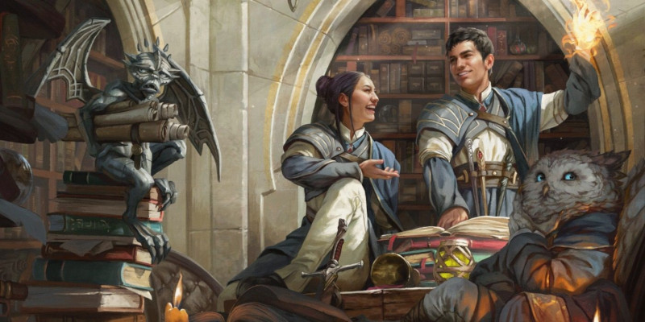

Mages de Strixhaven
Les cinq sous-classes de ce document sont destinées aux personnages qui se consacrent à l’une des voies de la magie pratiquée à l’académie de Strixhaven, qui accueille une grande variété d’étudiants et de lanceurs de sorts. Si les individus sont libres de poursuivre leurs études magiques comme bon leur semble, certains choisissent de se concentrer exclusivement sur les principes fondamentaux de l’une des cinq universités de l’académie :
- L’université de Forsapience, dédié à la recherche de l’Histoire en conversant avec les esprits anciens et en comprenant les caprices du temps lui-même.
- L’université de Prismari, dédié aux arts visuels et aux arts du spectacle renforcés par le pouvoir des éléments.
- L’université de Quandrix, consacré à l’étude et à la manipulation des principes mathématiques fondamentaux de la nature.
- L’université de Plumargent, dédié à la magie des mots, qu’il s’agisse de discours encourageants qui soutiennent les alliés ou d’un esprit vif qui ridiculise les ennemis.
- L’université de Flestrefleur, dédié à l’alchimie de la vie et de la mort et à l’exploitation des énergies dévastatrices de ces deux concepts.
Utilisation de ces sous-classes
Contrairement aux sous-classes ordinaires, les options présentées ici sont conçues pour être compatibles avec plusieurs classes. Les classes qui sont compatibles avec chaque option de sous-classe sont spécifiées au début de la description des sous-classes.
Choix de la sous-classe
Lorsque vous choisissez une sous-classe pour votre personnage (le collège bardique d’un barde, la tradition arcanique d’un magicien, etc), vous pouvez choisir l’une de ces options de sous-classe, à condition que la sous-classe soit compatible avec la classe de votre personnage. Vous ne pouvez choisir la sous-classe qu’une seule fois, même si vous êtes multiclassé dans une autre classe qui est également compatible avec la sous-classe.
La façon dont la sous-classe se manifeste dans l’histoire de votre personnage ne dépend que de vous. Peut-être que l’étincelle innée de magie élémentaire de votre ensorceleur a été affinée avec détermination par cette école depuis qu’il a montré son premier potentiel arcanique, ou que votre occultiste a évité les faveurs habituelles de son patron pour apprendre ces manifestations plus ésotériques du pouvoir. Peut-être que votre druide a choisi d’aller à l’université plutôt que de rejoindre un cercle druidique, ou que votre magicien a refusé un apprentissage traditionnel en faveur de la numéromancie moderne.
Aux niveaux supérieurs
Comme les sous-classes normales, la sous-classe que vous choisissez ici accorde à votre personnage de nouvelles capacités à des niveaux plus élevés. Lorsque votre personnage gagnerait normalement une nouvelle capacité de sous-classe (comme indiqué dans la table de classe de votre personnage), vous gagnez une capacité de cette sous-classe à la place. Toutes les capacités de sous-classe détaillées ici ont un prérequis de niveau, comme indiqué sous leur nom, et vous devez remplir le prérequis pour obtenir la capacité. Par exemple, pour obtenir une capacité notée « Niveau 6 + », votre personnage doit être de niveau 6 ou plus dans la classe pour laquelle la sous-classe a été choisie. Ainsi, si vous êtes un magicien avec la sous-classe Mage de Prismari, vous devez être un magicien de niveau 6 pour obtenir la capacité Medium privilégié.
Lorsque vous atteignez certains niveaux, vous pouvez avoir le droit de choisir parmi plusieurs capacités de la sous-classe. Lorsque vous atteignez un tel niveau, vous choisissez l’une de ces caractéristiques pour votre personnage. Sauf indication contraire, vous ne pouvez pas gagner plus d’une capacité de sous-classe à la fois. Par exemple, si vous êtes un barde avec la sous-classe Mage Forsapience, au niveau 14 vous gagnez au choix la capacité Échos de la guerre ou la capacité Les caprices de l’Histoire, mais pas les deux.
Mage de Forsapience
Sous-classe de barde, d'occultiste et de magicien
Les mages de Forsapience s’intéressent particulièrement aux forces qui sous-tendent et influencent l’Histoire. S’inspirant des érudits et des aventuriers d’autrefois, ils manifestent le pouvoir arcanique du passé par des dioramas éthérés et des fantastiques prouesses de combat. Les mages de Forsapience sont souvent accompagnés d’un esprit mort depuis longtemps, invoqué à leurs côtés. En effet, qui de mieux pour apprendre l’histoire ancienne que celui qui l’a vécue directement ?
Utiliser cette sous-classe
En choisissant le sous-classe Mage de Forsapience, vous gagnez deux capacités : Sorts de Forsapience et Compagnon ancestral.
Dans les caractéristiques de cette sous-classe, toute référence à votre classe fait référence à la classe à partir de laquelle vous avez obtenu la sous-classe. Si vous êtes un barde, l’université de Forsapience compte comme votre collège ; si vous êtes un occultiste, la magie de l’université compte comme votre patron ; et si vous êtes un magicien, l’université représente votre tradition arcanique.
Lorsque vous atteignez ensuite un niveau dans votre classe qui vous donne une capacité de sous-classe, vous gagnez une capacité de votre choix parmi les options présentées ici. Chaque capacité a un prérequis de niveau de classe, comme indiqué sous son nom. Vous devez remplir ce prérequis pour obtenir la capacité.
Sorts de Forsapience
Niveau 1 + Mage de Forsapience
Vous apprenez le sort mineur flamme sacrée et le sort de niveau 1 compréhension des langues. Vous apprenez des sorts supplémentaires lorsque vous atteignez certains niveaux dans cette classe, comme indiqué sur la table ci-dessous. Chacun de ces sorts compte comme un sort de classe pour vous, mais il ne compte pas dans le nombre de sorts que vous connaissez. Si vous êtes un magicien, vous pouvez ajouter ces sorts à votre livre de sorts dès que vous les apprenez, sans dépenser d’or, et les préparer normalement.
| Niveau | Sorts |
| 3 | déblocage, localisation d’objet |
| 5 | communication avec les morts, esprits gardiens |
| 7 | œil magique, façonnage de la pierre |
| 9 | vague destructrice, mythes et légendes |
Compagnon ancestral
Niveau 1 + Mage de Forsapience
Vous apprenez à invoquer les esprits des anciens morts et à les héberger temporairement dans les vestiges de vieilles statues, afin qu’ils puissent rester plus longtemps sur ce plan pour soutenir vos études et vous aider au combat. Chaque fois que vous terminez un repos court ou long, vous pouvez appeler et vous lier à un tel esprit, qui vient habiter une statue de taille moyenne autonome à moins de 3 mètres de vous pour vous servir de compagnon ancestral. Consultez les statistiques de jeu de cette créature dans le profil du compagnon ancestral, où votre bonus de maîtrise (BM) est utilisé à plusieurs endroits. Lorsque vous vous liez à votre compagnon ancestral, choisissez le type d’esprit avec lequel vous vous liez : Guérisseur, Sage ou Combattant. Votre choix d’esprit détermine certains traits dans son profil. La statue détermine l’apparence de l’esprit.
Le compagnon ancestral est amical envers vous et vos compagnons et obéit à vos ordres. En combat, le compagnon partage votre place dans l’ordre d’initiative, mais il prend son tour immédiatement après le vôtre. Il peut se déplacer et utiliser sa réaction seul, mais la seule action qu’il effectue à son tour est l’action d’esquive, à moins que vous n’effectuiez une action bonus à votre tour pour lui ordonner d’effectuer une autre action. Cette action peut être une action de son profil ou une autre action. Si vous êtes frappé d’incapacité, le compagnon peut effectuer n’importe quelle action de son choix, pas seulement l’Esquive. Comme action, vous pouvez toucher le compagnon ancestral et dépenser un emplacement de sort de niveau 1 ou plus. Le compagnon antique regagne un nombre de points de vie égal à 10 fois le niveau de sort dépensé.
Le compagnon périt lorsqu'il tombe à 0 point de vie, lorsque vous vous liez à un nouveau compagnon ancestral à la fin d’un repos court ou long, ou lorsque vous mourez. Lorsque le compagnon périt, l’esprit qui s’y trouve retourne à son plan d’origine, et la statue devient un objet inerte.
Compagnon ancestral
Construction de taille M, tout alignementPoints de vie 5 + 5 fois votre niveau dans cette classe (le compagnon a un nombre de dés de vie [d8] égal à votre niveau dans cette classe)
Vitesse 9 m
14 (+2)
9 (-1)
15 (+2)
14 (+2)
14 (+2)
11 (+0)
Jets de sauvegarde Con +2 plus BM, Int +2 plus BM, SAG +2 plus BM
Compétences Histoire +2 plus BM, Perception +2 plus (BM × 2)
Immunités aux états charmé, épuisement
Sens Perception passive 12 + (BM x 2)
Langues parle et comprend les langues que vous parlez
Puissance - (0 PX) Bonus de maîtrise égal à votre bonus
Ancienne Force d’âme. Si des dégâts réduisent le compagnon à 0 point de vie, il peut effectuer un jet de sauvegarde de Constitution avec un DD de 5 + les dégâts subis, sauf si les dégâts proviennent d’un coup critique. En cas de réussite, le compagnon se retrouve à 1 point de vie.
Conseil du Sage (Sage uniquement). Tant que vous vous trouvez à moins de 5 m de votre compagnon, vous et vos alliés bénéficiez d’un bonus de +2 aux jets d’Intelligence et de Sagesse.
Frappe de l’esprit. Attaque au corps à corps avec une arme : utilisez votre modificateur d’attaque de sort pour toucher, portée de 1,50 m, une cible que vous pouvez voir. Touché : 1d8 + 2 + BM dégâts de force.
Lumière du guérisseur (guérisseur uniquement). Le compagnon choisit une créature qu’il peut voir dans un rayon de 5 m de lui et s’illumine d’une lumière vivifiante. La créature gagne 1d8 + BM points de vie temporaires.
Protection du combattant (combattant uniquement). Lorsqu'une créature située à 1,50 mètre du compagnon effectue un jet de sauvegarde de Force ou de Dextérité, le compagnon s’impose entre la créature et le danger. La créature peut lancer un d4 et ajouter le nombre obtenu au jet de sauvegarde.
Leçons du passé
Niveau 6 + Mage de Forsapience
Grâce à vos études, vous apprenez à mieux écouter et prendre au sérieux les enseignements de l’Histoire. Lorsque vous vous liez à votre compagnon ancien, vous gagnez les avantages supplémentaires suivants, selon le type d’esprit que vous avez choisi :
Guérisseur. Votre maximum de points de vie augmente d’un montant égal à votre niveau dans cette classe, et vous gagnez le même nombre de points de vie. Lorsque vous regagnez des points de vie grâce à un sort, vous regagnez 1d8 points de vie supplémentaires.
Sage. Vous avez un avantage aux capacités utilisant les compétences Arcane, Histoire, Nature, et Religion. De plus, une fois par tour, lorsque vous infligez des dégâts à une créature avec un sort de niveau 1 ou plus, vous pouvez infliger 1d8 dégâts de force supplémentaires à cette créature.
Combattant. Si vous utilisez votre action pour lancer un sort mineur, vous pouvez effectuer une attaque d’arme dans le cadre de cette action. Si cette attaque d’arme touche, la cible subit 1d8 points de dégâts radiants supplémentaires.
Lorsque vous vous liez à un nouveau compagnon ancestral d’un type différent, vous perdez immédiatement les avantages de votre ancien compagnon et gagnez les avantages du type du nouveau compagnon.
Échos de la guerre
Niveau 10 + Mage de Forsapience
En puisant dans la magie du passé, vous pouvez faire résonner à nouveau les vieilles blessures de votre adversaire. Une fois par tour, lorsqu’une créature que vous pouvez voir touche une cible avec un jet d’attaque, vous pouvez utiliser votre réaction pour forcer la cible à faire un jet de sauvegarde de Sagesse contre le DD de sauvegarde de votre sort. En cas d’échec, la cible devient vulnérable à l’un des types de dégâts infligés par l’attaque. Cette vulnérabilité dure jusqu'à la fin du prochain tour de la cible et affecte les dégâts infligés par l’attaque déclenchante.
Vous pouvez utiliser votre réaction de cette manière un nombre de fois égal à votre bonus de maîtrise, et vous récupérez toutes les utilisations dépensées lorsque vous terminez un repos long.
Les caprices de l’histoire
Niveau 14 + Mage de Forsapience
En vous imprégnant des caprices chaotiques de l’histoire, vous apprenez à canaliser brièvement la nature sauvage du temps lui-même. Comme action bonus, vous pouvez entrer dans un état de chaos chronique. Lorsque vous entrez dans cet état, et au début de chacun de vos tours suivants pendant que vous êtes dans cet état, vous gagnez un des avantages suivants de votre choix :
Chance. Vous recevez de brefs flashs de l’avenir, ce qui vous permet de vous préparer aux assauts à venir. Chaque fois que vous faites un jet de sauvegarde contre un effet qui inflige des dégâts, vous pouvez lancer 1d6 et ajouter le nombre obtenu au total.
Résistance. Vous rembobinez le temps, tricotant ensemble les blessures au fur et à mesure qu’elles se produisent. Vous avez une résistance aux dégâts contondant, perforant et tranchant.
Rapidité. Le temps bégaie, ralentit les autres mais vous fait avancer. Votre vitesse de déplacement augmente de 5 m, et vous ne provoquez pas d’attaques d’opportunité.
Cet avantage dure jusqu'au début de votre prochain tour. Vous ne pouvez pas choisir le même avantage deux tours de suite. L’état dure 1 minute et se termine prématurément si vous êtes frappé d’incapacité. Une fois que vous avez utilisé cette caractéristique, vous ne pouvez plus l’utiliser jusqu'à la fin d’un repos long, à moins de dépenser un emplacement de sort de niveau 4 ou plus pour l’utiliser à nouveau.
Mage de Prismari
Sous-classe de druide, d'ensorceleur et de magicien
Les Mages de Prismari utilisent des décharges d’énergie élémentaire pour exprimer qui ils sont et comment ils voient le monde. Pour eux, la magie et le mouvement sont une seule et même chose ; tous deux sont des expressions de créativité brute grâce auxquelles des chefs-d’oeuvre sont réalisés. Dans leur quête de l’art, certains mages de Prismari se concentrent sur le perfectionnement des détails de leur technique, tandis que d’autres préfèrent libérer leurs visions créatives sauvages dans des spectacles éblouissants de puissance élémentaire.
Utiliser cette sous-classe
En choisissant la sous-classe Mage de Prismari, vous gagnez deux capacités : Compétences créatives et Art cinétique. Dans les caractéristiques de cette sous-classe, toute référence à votre classe fait référence à la classe à partir de laquelle vous avez obtenu la sous-classe. Si vous êtes un druide, l’université de Prismari compte comme votre cercle ; si vous êtes un ensorceleur, la magie de l’université est l’origine de votre sorcellerie ; et si vous êtes un magicien, l’université représente votre tradition arcanique.
Lorsque vous atteignez ensuite un niveau dans votre classe qui vous donne une capacité de sous-classe, vous gagnez une capacité de votre choix parmi les options présentées ici. Chaque capacité a un prérequis de niveau de classe, comme indiqué sous son nom. Vous devez remplir ce prérequis pour obtenir la capacité.
Compétences créatives
Niveau 1 + Mage de Prismari
Vous choisissez deux compétences de votre choix parmi les suivantes : Acrobatie, Athlétisme, Nature, ou Représentation.
Art cinétique
Niveau 1 + Mage de Prismari
Vous pouvez l’utiliser en tant qu’action bonus. Lorsque vous effectuez cette action bonus, choisissez l’un des effets supplémentaires suivants :
Balayage boréal. De l’eau glacée tourbillonne autour de vous. Jusqu'à la fin de votre tour, vous pouvez vous déplacer à la surface de l’eau comme s’il s’agissait d’une terre ferme inoffensive. De plus, lorsque vous quittez un espace situé à moins de 1,50 mètre d’une créature, vous pouvez obliger cette dernière à effectuer un jet de sauvegarde de Force contre le DD de votre sort. En cas d’échec, la créature est mise à terre. Une créature ne peut être affectée par l’eau qu’une fois par tour.
Tourbillon de feu. Des flammes couronnent vos pas. Une fois avant la fin de votre tour, vous pouvez forcer chaque créature située à 1,50 m de vous à effectuer un jet de sauvegarde de Dextérité contre le DD de votre sort. En cas d’échec, la créature subit des dégâts de feu égaux à 1d4 + votre modificateur de lanceur de sorts.
Éclair bondissant. Vous prenez une forme agile de foudre. Jusqu'à la fin de votre tour, vous pouvez vous déplacer dans l’espace d’autres créatures, et vous ne provoquez pas d’attaques d’opportunité. Si vous terminez votre tour dans l’espace d’une créature, vous êtes poussé dans l’espace inoccupé le plus proche.
Vous pouvez utiliser une action bonus de cette manière un nombre de fois égal à votre bonus de maîtrise, et vous récupérez toutes les utilisations dépensées lorsque vous terminez un repos long.
Médium privilégié
Niveau 6 + Mage de Prismari
Vous avez affiné vos formes d’expression élémentaire pour qu’elles correspondent au mieux à vos idées. Choisissez l’un des types de dégâts suivants : froid, feu ou foudre. Vous gagnez une résistance à ce type de dégâts. De plus, lorsque vous lancez un sort qui inflige le type de dégâts choisi, vous émettez une aura artistique spectaculaire, qui s’étend à 1,50 m de vous dans toutes les directions (mais pas à travers un obstacle total) et dure jusqu'à la fin de votre prochain tour. Tant que l’aura est active, chaque créature de votre choix bénéficie d’une résistance au type de dégâts choisi lorsqu'elle se trouve dans l’aura, car vous façonnez autour d’elle votre milieu élémentaire préféré. Vous pouvez changer votre choix de type de dégâts à chaque fois que vous terminez un repos long.
Expression focalisée
Niveau 10 + Mage de Prismari
En affinant vos talents, vous insufflez habilement à vos mouvements des expressions encore plus puissantes de la force élémentaire. Une fois par tour, lorsque vous infligez des dégâts à au moins une cible, vous gagnez un effet supplémentaire déterminé par le type de dégâts choisi pour votre capacité Médium privilégié :
Froid. L’une des cibles de votre choix subit 1d6 points de dégâts de froid supplémentaires et doit effectuer un jet de sauvegarde de Constitution contre le DD de votre sort. En cas d’échec, la vitesse de la cible est réduite de 3 mètres jusqu'à la fin de son prochain tour, car la glace l’ensevelit. Une cible ne peut être affectée par la glace qu’une fois par round.
Feu. L’une des cibles de votre choix subit 1d6 points de dégâts de feu supplémentaires. Des flammes fortifiantes dansent autour d’une créature de votre choix dans un rayon de 9 m autour de vous. La créature ainsi choisie gagne 1d6 points de vie temporaires.
Foudre. Une des cibles de votre choix subit 1d6 points de dégâts de foudre supplémentaires et doit effectuer un jet de sauvegarde de Dextérité contre le DD de votre sort. En cas d’échec, la cible est incapable de réagir jusqu'à la fin de son prochain tour, car des éclairs résiduels secouent sa forme.
Parfait physique
Niveau 14 + Mage de Prismari
Votre dévouement et votre entraînement sans relâche ont insufflé un sens exceptionnel de la précision et de la grâce à votre art. Vous gagnez la maîtrise des jets de sauvegarde de Dextérité si vous ne l’avez pas déjà. De plus, lorsque vous effectuez un jet de sauvegarde de Dextérité, vous pouvez considérer un résultat de 9 ou moins sur un d20 comme un 10.
Mage de Quandrix
Sous-classe d'ensorceleur et de magicien
Pour ceux qui deviennent des Mages de Quandrix, les mathématiques et la magie vont de pair. Ces individus apprennent à décomposer les phénomènes naturels en leurs composantes numériques de base et, en les manipulant, à modifier la réalité d’un simple coup de tête. Leurs talents vont de la physique concrète, comme l’accélération de la croissance des plantes et la redistribution des éléments de probabilité, à des exercices bizarrement théoriques qui déforment les fondements de l’espace et du soi.
Utiliser cette sous-classe
En choisissant la sous-classe Mage de Quandrix, vous gagnez deux capacités : Sorts de Quandrix et Fonctions de probabilité. Dans les caractéristiques de cette sous-classe, toute référence à votre classe fait référence à la classe à partir de laquelle vous avez obtenu la sous-classe. Si vous êtes un ensorceleur, la magie de Quandrix fait partie de votre origine magique, et si vous êtes un magicien, l’université représente votre tradition arcanique.
Lorsque vous atteignez ensuite un niveau dans votre classe qui vous donne une capacité de sous-classe, vous gagnez une capacité de votre choix parmi les options présentées ici. Chaque capacité a un niveau de classe prérequis, comme indiqué sous son nom. Vous devez remplir ce prérequis pour obtenir la capacité.
Sorts de Quandrix
Niveau 1 + Mage de Quandrix
Vous apprenez le sort mineur assistance et le sort de niveau 1 éclair traçant. Vous apprenez des sorts supplémentaires lorsque vous atteignez certains niveaux dans cette classe, comme indiqué sur la table ci-dessous. Chacun de ces sorts compte comme un sort de classe pour vous, mais il n’est pas comptabilisé dans le nombre de sorts que vous connaissez. Si vous êtes un magicien, vous pouvez ajouter ces sorts à votre livre de sorts dès que vous les apprenez, sans dépenser d’or, et les préparer normalement.
| Niveau | Sorts |
| 3 | agrandissement/rapetissement, croissance d’épines |
| 5 | aura de vitalité, hâte |
| 7 | contrôle de l’eau, liberté de mouvement |
| 9 | cercle de pouvoir, passe-muraille |
Fonctions de probabilité
Niveau 1 + Mage de Quandrix
En exécutant plusieurs fois les modèles mathématiques de la réalité, vous pouvez faire pencher la chance en faveur d’une créature. Lorsque vous lancez un sort qui cible au moins une créature, vous pouvez choisir cette créature ou une autre créature située à moins de 9 m d’elle (y compris vous-même) et ajouter l’un des effets suivants :
Fonction décroissante. La créature choisie doit réussir un jet de sauvegarde de Sagesse contre le DD de votre sort, ou la créature doit lancer 1d6 et soustraire le nombre obtenu du prochain jet d’attaque qu’elle effectue avant le début de votre prochain tour.
Fonction supplémentaire. Une fois avant le début de votre prochain tour, la créature choisie peut lancer 1d6 et ajouter le nombre obtenu à un jet d’attaque ou un jet de sauvegarde de son choix. La créature peut lancer le d6 après avoir lancé le d20 mais doit décider avant que les effets du jet ne se produisent.
Changement de vitesse
Niveau 6 + Mage de Quandrix
Vous apprenez à manipuler les formules cinétiques et à modifier la vélocité d’une autre créature. Lorsqu'une créature que vous pouvez voir commence son tour ou se déplace dans un espace situé à moins de 9 m de vous, vous pouvez utiliser votre réaction pour forcer la créature à effectuer un jet de sauvegarde de Charisme contre le DD de votre sort, qu’elle peut choisir d’échouer volontairement. En cas d’échec, la créature est téléportée dans un espace inoccupé de votre choix que vous pouvez voir dans un rayon de 9 m autour de vous.
Vous pouvez utiliser votre réaction de cette manière un nombre de fois égal à votre bonus de maîtrise, et vous récupérez toutes les utilisations dépensées lorsque vous terminez un repos long.
Équation nulle
Niveau 10 + Mage de Quandrix
Grâce à des calculs minutieux, vous assaillez vos ennemis d’équations abstraites qui réduisent leur puissance. Une fois par tour, immédiatement après avoir infligé des dégâts à une créature, vous pouvez forcer cette dernière à effectuer un jet de sauvegarde de Constitution contre le DD de sauvegarde de votre sort. En cas d’échec, la créature est désavantagée aux jets de sauvegarde de Force et de Dextérité, et ses attaques d’armes ne peuvent infliger que la moitié des dégâts. Ces effets durent jusqu'au début de votre prochain tour.
Vous pouvez utiliser cette capacité un nombre de fois égal à votre bonus de maîtrise, et vous récupérez toutes les utilisations dépensées lorsque vous terminez un repos long.
Tunnel quantique
Niveau 14 + Mage de Quandrix
Votre expertise mathématique vous permet de modifier les équations fondamentales de votre être. Vous gagnez une résistance aux dégâts contondants, perforant et tranchant. De plus, vous pouvez vous déplacer à travers d’autres créatures et objets comme s’il s’agissait d’un terrain difficile, mais vous subissez 1d10 points de dégâts de force par tranche de 1,50 m parcouru lorsque vous êtes à l’intérieur d’une autre créature ou d’un autre objet. Si vous terminez votre tour à l’intérieur d’une créature ou d’un objet, vous êtes poussé dans l’espace inoccupé le plus proche que vous avez occupé en dernier.
Mage de Plumargent
Sous-classe de barde, d'occultiste ou de magicien
Les mages de Plumargent perfectionnent le pouvoir des mots. Ils canalisent la magie de l’ombre et de la lumière à travers les mots qu’ils soient prononcés à haute voix, écrits ou signés par des gestes. Les mots d’un mage de Plumargent apportent le salut à leurs alliés et le désespoir à leurs ennemis.
Utiliser cette sous-classe
En choisissant la sous-classe Mage de Plumargent, vous gagnez deux capacités : Apprenti éloquent et Barbes argentées. Dans les caractéristiques de cette sous-classe, toute référence à votre classe fait référence à la classe à partir de laquelle vous avez obtenu la sous-classe. Si vous êtes un barde, l’université de Plumargent compte comme votre collège, si vous êtes un occultiste, l’université compte comme votre patron, et si vous êtes un magicien, l’université compte comme votre tradition.
Lorsque vous atteignez ensuite un niveau dans votre classe qui vous donne une capacité de sous-classe, vous gagnez une capacité de votre choix parmi les options présentées ici. Chaque capacité a un prérequis de niveau de classe, comme indiqué sous son nom. Vous devez remplir ce prérequis pour obtenir la capacité.
Apprenti éloquent
Niveau 1 + Mage de Plumargent
Vous apprenez un sort mineur de votre choix, soit flamme sacrée, soit moquerie cruelle. Il n’est pas comptabilisé dans le nombre de sorts mineurs que vous connaissez et il est ajouté à votre liste de sorts de classe s’il n’y figure pas déjà. De plus, vous gagnez la maîtrise de deux des compétences suivantes, au choix : Intimidation, Intuition, Représentation, Persuasion ou Tromperie.
Barbes argentées
Niveau 1 + Mage de Plumargent
Vous pouvez invoquer des mots empreints de magie pour démoraliser vos ennemis et transformer leur malheur en une aubaine pour soutenir vos alliés. Immédiatement après qu’une créature que vous pouvez voir à moins de 18 m de vous réussit un jet d’attaque, de caractéristique ou de sauvegarde, vous pouvez utiliser votre réaction pour démoraliser la créature. À moins que la créature ne soit immunisée contre le charme, elle relance le d20 et doit utiliser le résultat le plus faible. Si le jet d’attaque, de caractéristique ou le jet de sauvegarde échoue, vous pouvez alors choisir une autre cible que vous voyez dans un rayon de 18 m autour de vous (vous pouvez vous choisir vous-même). Cette cible est dotée du pouvoir de relancer un jet d’attaque, de caractéristique ou de sauvegarde qu’elle effectue dans un délai de 1 minute et utiliser le résultat le plus élevé. Une créature ne peut être renforcée que par une seule utilisation de cette capacité à la fois.
Dés qu’une créature rate un jet d’attaque, de caractéristique ou de sauvegarde à cause du relancement de dé forcé par cette capacité, vous ne pouvez plus utiliser cette capacité jusqu'à ce que vous ayez terminé un repos long, à moins que vous ne dépensiez un emplacement de sort pour l’utiliser à nouveau.
Linceul d’encre
Niveau 6 + Mage de Plumargent
Vous apprenez le sort ténèbres, et il est ajouté à votre liste de sorts de classe s’il n’y figure pas déjà. Si vous êtes un magicien, vous l’ajoutez à votre livre de sorts, s’il n’y est pas déjà. Vous pouvez lancer le sort sans dépenser un emplacement de sort, et vous ne pouvez pas le faire à nouveau avant d’avoir terminé un repos long. Lorsque vous lancez le sort de cette façon, vous pouvez voir normalement à travers l’obscurité créée, et lorsqu'une créature que vous pouvez voir commence son tour dans l’obscurité, vous pouvez infliger 2d10 dégâts psychiques à cette créature. Vous pouvez également lancer ce sort normalement, sans les effets supplémentaires, en utilisant les emplacements de sorts dont vous disposez, de niveau 2 ou plus.
Infusion d’éloquence
Niveau 10 + Mage de Plumargent
Lorsque vous lancez un sort qui inflige des dégâts, vous pouvez invoquer des mots de pouvoir supplémentaires pour changer le type de dégâts du sort en psychique ou radiant, au choix. Toute créature endommagée par le sort subit des dégâts supplémentaires égaux à votre bonus de maîtrise et voit ses émotions basculer vers le désespoir ou l’adoration, selon le type de dégâts infligés :
Psychique. La créature est effrayée par vous jusqu'au début de votre prochain tour.
Radiant. Vous charmez la créature jusqu'au début de votre prochain tour.
Vous pouvez utiliser cette capacité un nombre de fois égal à votre bonus de maîtrise, et vous récupérez toutes les utilisations dépensées lorsque vous terminez un repos long.
Mot de pouvoir
Niveau 14 + Mage de Plumargent
Vous pouvez invoquer un mot de pouvoir qui représente l’apogée de votre étude de la magie. Vous bénéficiez des options suivantes :
Désespoir mortel. Lorsque la cible de Barbes argentées échoue à un jet d’attaque, de caractéristique ou de sauvegarde à cause du dé relancé, vous pouvez invoquer un mot de désespoir pour donner à la cible une vulnérabilité à un type de dégâts de votre choix jusqu'au début de votre prochain tour.
Invocation désintéressée. Lorsqu'une créature que vous pouvez voir à moins de 18 m de vous subit des dégâts, vous pouvez invoquer un mot de pouvoir en utilisant votre réaction pour accorder à la créature une résistance à ces dégâts, et vous subissez un montant de dégâts psychiques égal aux dégâts subis par la créature.
Mage de Flestrefleur
Sous-classe de druide et d'occultiste
Les mages de Flestrefleur tirent leur magie de l’énergie qui circule dans un va-et-vient incessant entre la vie et la mort. Ils voient la dualité entre la vie florissante et la mort inévitable dans toutes choses, exploitant et manipulant la transition de l’énergie entre ces états. Certains adeptes de Flestrefleur se concentrent sur les énergies vitales pour nourrir la vie et donner du pouvoir aux autres, tandis que d’autres se consacrent à l’évacuation de la vitalité vers la décomposition pour saper et abattre leurs ennemis.
Utiliser cette sous-classe
En choisissant la sous-classe Mage de Flestrefleur, vous gagnez deux capacités : Sorts de Flestrefleur et Mane d’essence vitale. Dans les caractéristiques de cette sous-classe, toute référence à votre classe fait référence à la classe à partir de laquelle vous avez obtenu la sous-classe. Si vous êtes un druide, l’université de Flestrefleur compte comme votre cercle, et si vous êtes un occultiste, l’université compte comme votre patron.
Lorsque vous atteignez ensuite un niveau dans votre classe qui vous donne une capacité de sous-classe, vous gagnez une capacité de votre choix parmi les options présentées ici. Chaque capacité a un prérequis de niveau de classe, comme indiqué sous son nom. Vous devez remplir ce prérequis pour obtenir la capacité.
Sorts de Flestrefleur
Niveau 1 + Mage de Flestrefleur
Vous apprenez le sort mineur stabilisation et les sorts de niveau 1 soins et blessures. Vous apprenez des sorts supplémentaires lorsque vous atteignez certains niveaux dans cette classe, comme indiqué sur la table ci-dessous. Chacun de ces sorts compte comme un sort de classe pour vous, mais il n’est pas comptabilisé dans le nombre de sorts que vous connaissez. Si vous êtes un druide, vous avez toujours les sorts préparés, et ils ne comptent pas dans le nombre de sorts que vous pouvez préparer chaque jour.
| Niveau | Sorts |
| 3 | restauration partielle, rayon affaiblissant |
| 5 | retour à la vie, toucher du vampire |
| 7 | flétrissement, restauration supérieure |
| 9 | coquille antivie, soins de groupe |
Mane d’essence vitale
Niveau 1 + Mage de Flestrefleur
Comme action bonus, vous pouvez puiser dans un réservoir d’essence de vie pour vous renforcer pendant 1 minute, ou jusqu'à ce que vous utilisiez à nouveau cette capacité. Pendant cette durée, vous gagnez l’un des avantages suivants de votre choix :
Croissance excessive. Lorsque vous choisissez cet avantage, et comme action bonus aux tours suivants tant que l’avantage dure, vous pouvez dépenser et lancer un dé de points de vie. Vous regagnez un nombre de points de vie égal au nombre obtenu plus votre modificateur de capacité de lanceur de sorts.
Frappe flétrie. Lorsque vous infligez des dégâts, vous pouvez changer le type de dégâts en nécrotique, et vous ignorez la résistance aux dégâts nécrotiques.
Vous pouvez utiliser cette capacité un nombre de fois égal à votre bonus de maîtrise, et vous récupérez toutes les utilisations dépensées lorsque vous terminez un repos long.
Infusion de Flestrefleur
Niveau 6 + Mage de Flestrefleur
Vous gagnez la maîtrise des kits d’herboriste si vous ne l’avez pas déjà. Lorsque vous terminez un repos long, vous pouvez utiliser un kit d’herboriste et un pot ou un chaudron pour créer des infusions magiques. Vous créez un nombre d’infusions égal à votre bonus de maîtrise. Chaque infusion nécessite sa propre fiole. Une infusion conserve sa puissance magique pendant 24 heures ou jusqu'à ce qu’elle soit utilisée. Pour chaque infusion, choisissez l’un des effets suivants :
Fortifiant. Lorsque vous créez cette infusion, choisissez un type de dégâts dans la liste suivante : froid, feu, nécrotique, poison ou radiant. Une créature peut boire cette infusion ou l’administrer à une autre créature en tant qu’action. Le destinataire gagne une résistance au type de dégâts choisi pendant 1 heure.
Accélération. Une créature peut boire cette infusion ou l’administrer à une autre créature par une action. Le bénéficiaire regagne 2d6 points de vie, et une maladie ou état de la liste suivante affectant le bénéficiaire prend fin (au choix de l’utilisateur de l’infusion) : charmé, effrayé, paralysé, empoisonné, étourdi.
Toxification. En tant qu’action, une créature peut appliquer cette infusion à une arme simple ou martiale. La prochaine fois que l’arme ou une munition tirée par celle-ci touche une créature dans un délai de 1 heure, la cible subit 2d6 dégâts de poison et doit réussir un jet de sauvegarde de Constitution contre le DD de votre sort ou être empoisonnée pendant 1 minute.
Adepte de Flestrefleur
Niveau 10 + Mage de Flestrefleur
Votre connexion avec le flux de la force vitale s’approfondit. Une fois par tour, lorsque vous infligez des dégâts nécrotiques ou restaurez des points de vie à l’aide d’un sort, la cible du sort subit des dégâts supplémentaires ou regagne des points de vie supplémentaires égaux à votre bonus de maîtrise.
Vortex flétrissant
Niveau 14 + Mage de Flestrefleur
Lorsque vous lancez un sort qui inflige des dégâts nécrotiques à un nombre quelconque de créatures qui ne sont pas des morts-vivants ou des constructions, choisissez une des créatures qui a subi des dégâts. Vous drainez une quantité d’énergie vitale égale à la moitié des dégâts infligés à la créature choisie. Une créature autre que vous-même que vous pouvez voir dans un rayon de 9 m autour de vous regagne un nombre de points de vie égal à l’énergie vitale drainée.
Vous pouvez utiliser cette capacité un nombre de fois égal à votre bonus de maîtrise, et vous récupérez toutes les utilisations dépensées lorsque vous terminez un repos long.

Traduit par Jpp